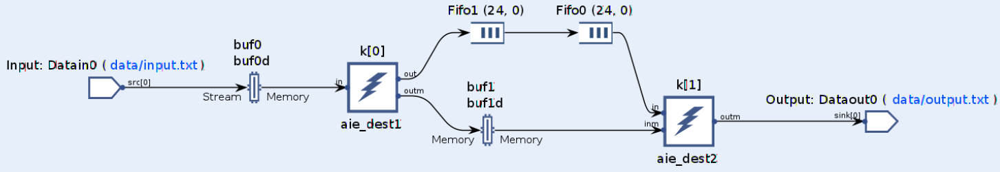
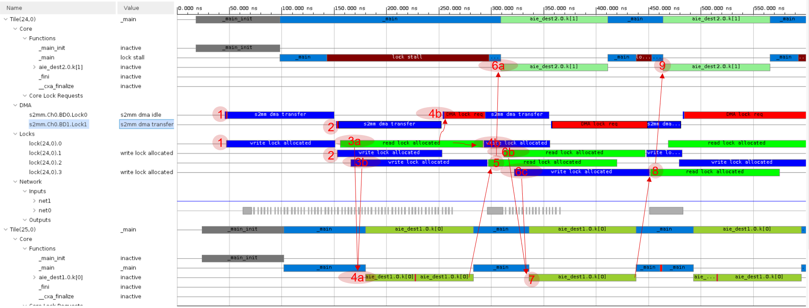
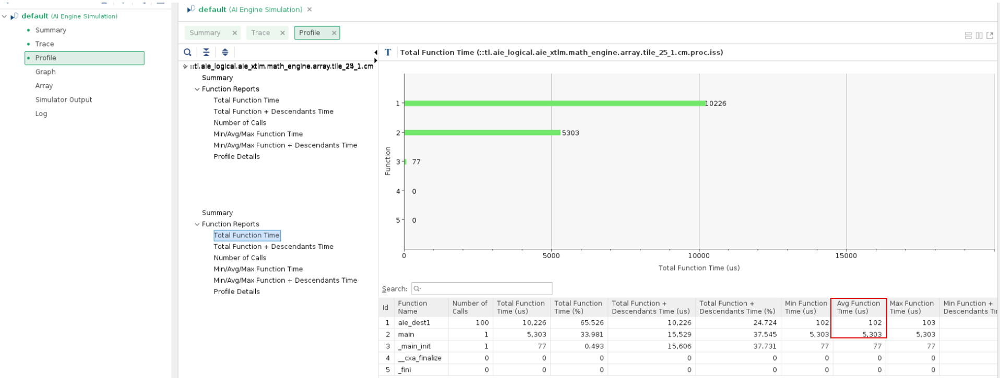
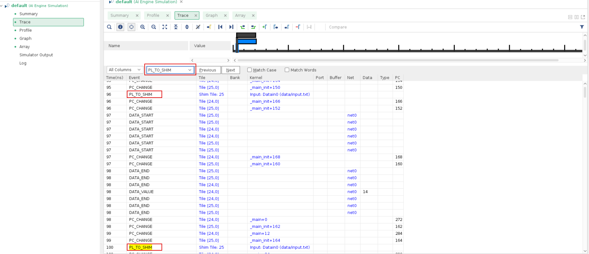

AI Engine DevelopmentSee Vitis™ Development Environment on xilinx.com See Vitis-AI™ Development Environment on xilinx.com |
AI Engine Graph Execution and Measurement¶
Version: Vitis 2021.2
AI Engine graph execution uses locks for memory synchronization. The stream interfaces have inherent data synchronization through backward or forward pressure.
This example introduces the Trace view to show how kernels with buffers and streams are executed and synchronized. Performance measurement methods are also introduced to help you identify the performance bottlenecks in the design. An optimized version of the design is then introduced.
Note: The default working directory in this step is testcase_ssfifo, unless explicitly stated otherwise.
Graph and Kernel Code¶
Run the following
makecommand to compile the design:make aie
Open the compile result in Vitis Analyzer. It can be found in the following directory:
vitis_analyzer Work/graph.aiecompile_summary
Examine the graph view in Vitis Analyzer.

There are two kernels, aie_dest1 and aie_dest2, in the design. These two kernels are connected through a stream connection and a window connection (ping-pong buffers buf1 and buf1d). The stream connection contains two stream switch FIFOs: Fifo0(24,0) and Fifo1(24,0). These hardened FIFOs are in the stream switch of AI Engine array tile 24_0. These FIFOs are inserted to prevent deadlock in the design (see AI Engine Hang Analysis).
The input from the PL is connected to the ping-pong buffers buf0 and buf0d, which are read by kernel aie_dest1. The output of kernel aie_dest2 is connected to the PL through a stream connection.
The code for aie_dest1 is as follows:
```
__attribute__ ((noinline)) void aie_dest1(input_window<int32> *in,
output_stream<int32> *out, output_window<int32> *outm){
aie::vector<int32,4> tmp;
for(int i=0;i<8;i++)
chess_prepare_for_pipelining
{
tmp=window_readincr_v<4>(in);
writeincr(out,tmp);
window_writeincr(outm,tmp);
}
}
```
It reads 32 int values from the input window and writes them to the stream and window output. The __attribute__ ((noinline)) command instructs the tool the keep the hierarchy of the kernel function.
The code for aie_dest2 is as follows:
```
__attribute__ ((noinline)) void aie_dest2(input_stream<int32> *in, input_window<int32> *inm,
output_stream<int32> *outm){
aie::vector<int32,4> tmp;
aie::vector<int32,4> tmp2;
for(int i=0;i<8;i++)
chess_prepare_for_pipelining
{
tmp=readincr_v<4>(in);
tmp2=window_readincr_v<4>(inm);
writeincr(outm,tmp+tmp2);
}
}
```
It reads from the stream input and the window buffer, and writes to the stream output.
Graph Execution Model¶
Use the following command to run AI Engine simulator:
make aiesim
Open the running result by accessing the following directory:
vitis_analyzer aiesimulator_output/default.aierun_summary
Note: The
--dump-vcdoption is used byaiesimulatorto dump the VCD file for trace.Click Trace view in Vitis Analyzer. Zoom in to view the first few runs of the design:

This figure lists the following events and their dependencies:
1: Tile 24_0 DMA s2mm channel 0 (
s2mm.Ch0.BD0.lock0) starts. It acquires the lock of ping of input buffer (buf0) toaie_dest1and transfers data from the PL tobuf0. Refer to Graph View for the position of the buffer in the graph.2: After DMA s2mm channel 0 completes, DMA s2mm channel 1 (
s2mm.CH1.BD1.lock1) starts. It acquires the lock of pong of input buffer (buf0d) and transfers data from the PL tobuf0d.3a: The
aie_dest1kernel (in tile 25_0) acquires the lock ofbuf0(shown asread lock allocated).3b:
aie_dest1acquires the lock of ping of output buffer (buf1) as well.4a: After
aie_dest1acquires the locks of its input buffer (buf0) and output buffer (buf1), it starts. If any lock cannot be acquired, it will run into lock stall.4b: After tile 24_0 DMA s2mm channel 1 (
s2mm.CH1.BD1.lock1) completes, it switches back to DMA s2mm channel 0 (s2mm.CH0.BD1.lock0). At first,buf0is still read byaie_dest1(read lock allocated), so it sticks atDMA lock reqin red. After the read lock of the buffer is released, it acquires lock and starts data transfer.5: After
aie_dest1completes, it releases the output buffer (buf1). The kernelaie_dest2acquires the lock ofbuf1(read lock allocated).6a: After the lock of
buf1is acquired,aie_dest2starts.6b:.
aie_dest1acquires the lock ofbuf0d(read lock allocated).6c:
aie_dest1acquires the lock ofbuf1d(write lock allocated).7: After
aie_dest1acquires the locks of its input buffer (buf0d) and output buffer (buf1d), it starts.8: After
aie_dest1completes, it releases the output buffer (buf1d). Kernelaie_dest2acquires the lock ofbuf1d(read lock allocated).9: After the lock of
buf1dis acquired,aie_dest2starts.Note: The stream interface does not need to acquire lock; it has inherent backward and forward pressure for data synchronization. Every lock acquire and release event has some cycles of overhead.
{kind=link}
Graph Performance Measurement¶
There are multiple ways to measure performance:
The AI Engine simulator output contains a timestamp for each piece of output data. It is possible to make performance calculations both manually and by using scripts. For example, the output of the example (
aiesimulator_output/data/output.txt) looks like the following:T 364 ns 2 ...... T 15816 ns 30
The first samples come out in
364 ns, and the last samples come out in15816 ns. The throughput therefore can be calculated as follows:Total time = 15816 - 364 = 15452 ns Total bytes = 128 * 100 = 12800 bytes Throughput = 12800/(15452*1e-3) = 828.3 MB/s
This method does not measure the latency of the first kernel execution to produce the output data: make sure that the graph runs a number large enough that this overhead can be neglected.
Xilinx provides event APIs for performance profiling purposes. These APIs use performance counters in shim tiles to do profiling. The following enumeration usages are introduced in this tutorial:
event::io_stream_start_to_bytes_transferred_cycles: This records the start of a running event with a performance counter, and records the event that a specific amount of data is transferred with another performance counter. The return number with this enumeration is therefore the total cycles required to receive that amount of data. The profiled stream should be stopped after this amount of data has been transferred.
event::io_stream_running_event_count: This counts how many running events have occurred between
start_profilingandread_profiling. It can be used to count how much data has been transferred, whether the graph is running infinitely or not.
Take a look at
aie/graph.cpp. The code to perform profiling is as follows:int iterations=100; int bytes_per_iteration=128; int total_bytes=bytes_per_iteration * iterations; event::handle handle = event::start_profiling(*dout, event::io_stream_start_to_bytes_transferred_cycles, total_bytes); if(handle==event::invalid_handle){ printf("ERROR:Invalid handle. Only two performance counter in a AIE-PL interface tile\n"); return 1; } gr.run(100); gr.wait(); long long cycle_count = event::read_profiling(handle); std::cout<<"cycle count:"<<cycle_count<<std::endl; event::stop_profiling(handle); double throughput = (double)total_bytes / (cycle_count * 1e-3); printf("Throughput of the graph: %f MB/s\n",throughput);
The output of AI Engine simulator looks like the following:
cycle count:15414 Throughput of the graph: 830.413909 MB/s
The event API can be applied in AI Engine simulator, hardware emulation, and hardware flows.
The performance result can also be found in the AI Engine simulator profile report. Add the
--profileoption toaiesimulator, open Vitis Analyzer, and open the Profile view. The profile result can be viewed as shown in the following figure:
Kernel
aie_dest1takes an average of 102 cycles for one iteration. Themainfunction takes 5303 cycles for 100 iterations of the graph. This is around 53 cycles of overhead for each iteration of the graph. This overhead includes the lock acquires of the window buffers and the overhead of API calls.The performance of
aie_dest1is bounded by the stream interface throughput. The theoretical limit is up to 4 bytes a cycle (4 GB/s), and there are 128 bytes of input for one run. This means that it at least has 32 cycles for the main loop, although in actuality it takes 102 cycles. This indicates that the loop is not well pipelined.You can check performance-related events to see if they match expectations. For example, check the event
PL_TO_SHIMto see if the PL can send 32 bits of data per cycle, which is the best achievable performance for a single stream interface. Look for thePL_TO_SHIMevent in Trace view in Vitis Analyzer:
Search it for multiple times. When it is stable, it can be seen that every four cycles, it happens once. This is because the frequency of the PL has been set at 250 MHz by the option
--pl-freq=250for the AI Engine compiler.From a best performance and best resource perspective, you might select a 64-bit interface at 500 MHz if timing allows. If not, it is possible to have the PL running at 250 MHz with a 128-bit width interface.
Note: The interface takes two channels in the AI Engine-PL interface tiles.
The following methods are introduced in AI Engine Performance Profile:
Profiling by C++ class API
Profiling by AI Engine cycles from AI Engine kernels
Profiling by event API
Design Optimization Considerations¶
In this section, the reference design is in testcase_dmafifo_opt. From performing the above analysis, it can be seen that the bottleneck of this design contains the following issues:
The interface bandwidth is not optimal. The design uses a PLIO width of 32 bits running at 250 MHz. Change it to 128 bits running at 250 MHz. The relevant code is in
aie/graph.h:in=input_plio::create("Datain0", plio_128_bits, "data/input.txt"); dataout=output_plio::create("Dataout0", plio_128_bits, "data/output.txt");
The overhead of the graph iterations is too large. The hierarchy of the design should not be touched. Increase the window buffer size from 128 bits to 4096 bits. To avoid deadlock, the FIFO size also needs to be increased. The relevant code is in
aie/graph.h:connect< window<4096> >net0(in, k[0].in[0]); connect< stream >net1(k[0].out[0], k[1].in[0]); connect< window<4096> >net2(k[0].out[1], k[1].in[1]); connect< stream >net3(k[1].out[0], dataout); fifo_depth(net1)=1024;
Note: When the FIFO depth is large, the DMA FIFO is used. Do not set the FIFO depth to larger than (or equal to) 8192 for a single DMA FIFO.
The kernel is not well pipelined. As well as increasing the loop count to deal with more data, more instructions should be added in the loop body and a
__restrictkeyword should be added to the ports to make the tool schedule instructions more freely. The optimized code foraie_dest1is as follows:__attribute__ ((noinline)) void aie_dest1(input_window<int32> * __restrict in, output_stream<int32> * __restrict out, output_window<int32> * __restrict outm){ aie::vector<int32,4> tmp; for(int i=0;i<128;i++) chess_prepare_for_pipelining { tmp=window_readincr_v<4>(in); writeincr(out,tmp); window_writeincr(outm,tmp); tmp=window_readincr_v<4>(in); writeincr(out,tmp); window_writeincr(outm,tmp); } }
Similar optimization is done for
aie_dest2. For more information about loop analysis and optimization, refer to the AI Engine Kernel Coding Best Practices Guide.
After making these optimizations, run the following command:
```
make aiesim
```
It can be seen that the design performance can be increased from around 828 MB/s to around 3748 MB/s. This is approaching the theoretical limit of the design (4 GB/s).
Next, run the design in hardware emulation:
```
make run_hw_emu
```
In QEMU, run the following commands:
```
cd /mnt/*1
./host.exe a.xclbin
```
Build the design for hardware:
```
make package TARGET=hw
```
The performance in hardware is similar:
```
cycle count:109435
Throughput of the graph: 3742.86 MB/s
```
Conclusion¶
This example has shown a number of different ways to do performance analysis and profiling. Some optimization skills have also been introduced. In the next section, take a look at how deadlocks might occur, and how to analyze them: see AI Engine Deadlock Analysis.
Revision History¶
July 2021: Initial release.
© Copyright 2021 Xilinx, Inc.
Licensed under the Apache License, Version 2.0 (the “License”); you may not use this file except in compliance with the License. You may obtain a copy of the License at
http://www.apache.org/licenses/LICENSE-2.0
Unless required by applicable law or agreed to in writing, software distributed under the License is distributed on an “AS IS” BASIS, WITHOUT WARRANTIES OR CONDITIONS OF ANY KIND, either express or implied. See the License for the specific language governing permissions and limitations under the License.